俞晓鸿
俞晓鸿，男，1966年9月29日生，浙江杭州人，我国教育信息化和有效教学的著名专家，国家科技支撑计划研究成果“基于前概念的精准教学”专家工作站首席专家，浙江大学现代教育质量监测与服务研究所所长、研究员。
主要贡献：
我国第1个商业网站的总策划
我国教育城域网建设和应用理念的提出者
精准教学的理论基础—前概念原理的提出者
以虔行的脚步深入学校指导真正有效的教学
研究领域：
教育信息化、前概念原理、教学设计、教学大数据及其算法、教学配方、精准的有效的教育
主要成就：
一、1990年至1996年，俞晓鸿研究并提出了物理设计性实验教学方法。该研究成果在中国物理学会会刊《物理教学》1993年第12期第1页上发表，有关该研究的阶段性进展持续在全国或国际会议上做大会特邀报告。经过12次发展完善、100多次补充修订，该成果于1996年获得了国家教委(即当时的教育部)组织评选的全国优秀教育论文一等奖，国家教委副主任王明达同志亲自颁奖。1991年,俞晓鸿被美国物理教师协会吸收为外籍会员。1994年,俞晓鸿作为大会秘书长组织了物理教育国际会议。1999年，俞晓鸿当选为中国物理学会教学委员会委员，2003年，再次当选。
照片：
01 俞晓鸿用6年时间写了一篇论文,1990-1996
02 俞晓鸿有关设计性实验教学方法的论文在中国物理学会会刊第1页上发表,1993
03 俞晓鸿荣获全国优秀论文一等奖国家教委副主任王明达同志颁奖,1996
04 俞晓鸿在浙江大学举行的物理教育国际会议上做大会报告,1994
05 俞晓鸿在匈牙利举行的物理教育国际会议上做大会报告,1997
06 俞晓鸿在中国物理学会全国代表大会上做大会报告,1999
07 俞晓鸿在当选中国物理学会教学委员会委员后与两弹元勋彭桓武院士合影,1999
08 俞晓鸿被吸收为美国物理教师协会外籍会员,1991
09 美国物理教师协会当时在中国大陆共有3位外籍会员,1991
10 俞晓鸿与国际物理教育委员会主席美国物理教师协会主席E.L.Jossem教授在浙大讨论国际会议筹备,1994
11 俞晓鸿与国际物理教育委员会副主席国际纯粹与应用物理联合会副主席G.Marx教授在匈牙利,1997
12 俞晓鸿与德国物理教育学会主席D.Nachtigall教授在广西师大,1993
13 俞晓鸿与日本物理教育学会总干事笠耐教授在日本早稻田大学,2000
14 俞晓鸿与我国物理教育前辈恽瑛先生及国际物理教育的前辈们在浙大合影,1994
15 俞晓鸿与中国物理学会理事长冯端院士,1999
16 俞晓鸿与中国物理学会理事长国家自然科学基金委主任北大校长陈佳洱院士,1999
17 俞晓鸿与国家自然科学基金委副主任王乃彦院士,1999
18 俞晓鸿与中国物理学会副理事长兼教学委员会主任赵凯华先生,1998
19 俞晓鸿与中国物理学会教学委员会秘书长高等教育出版社副总编杨再石先生,1998
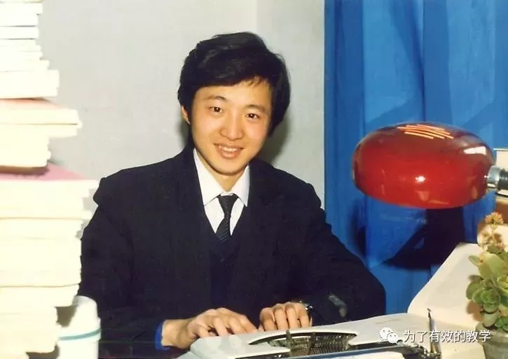 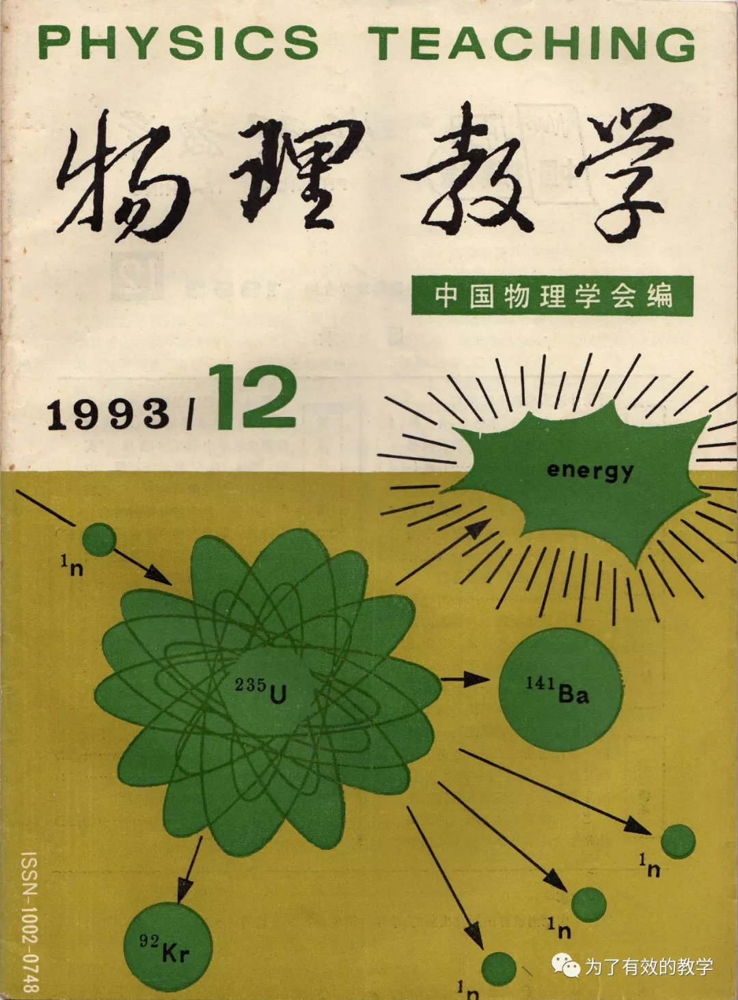 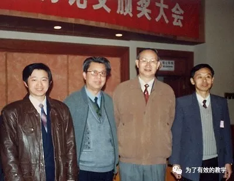 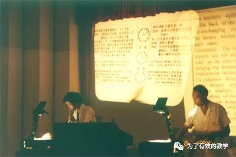 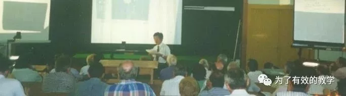 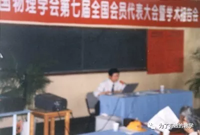 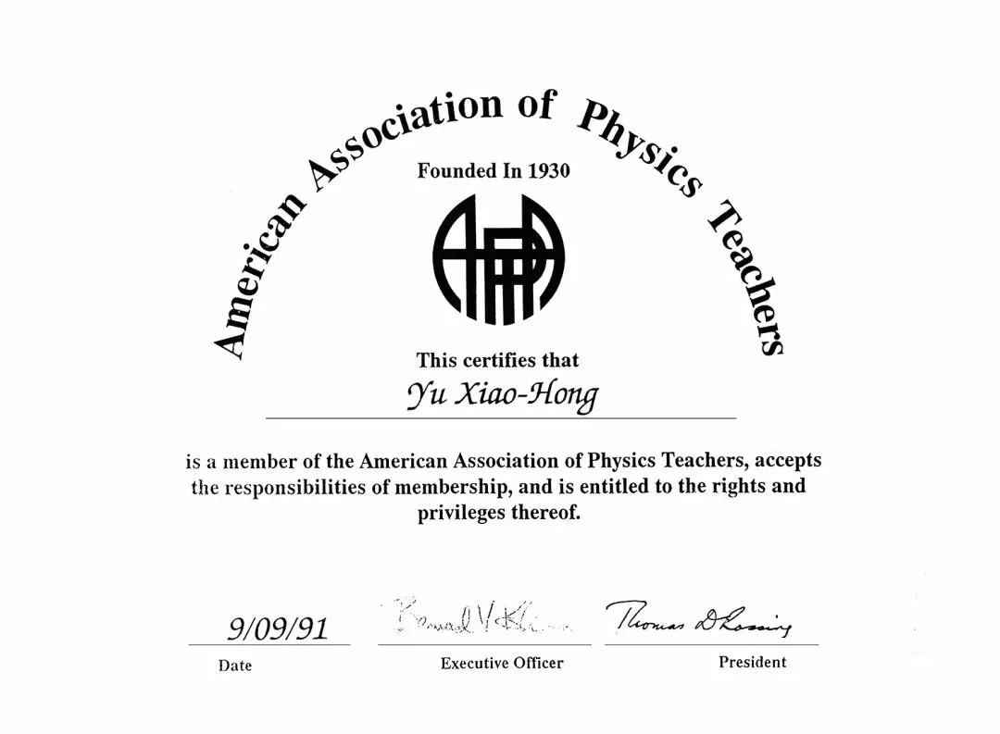 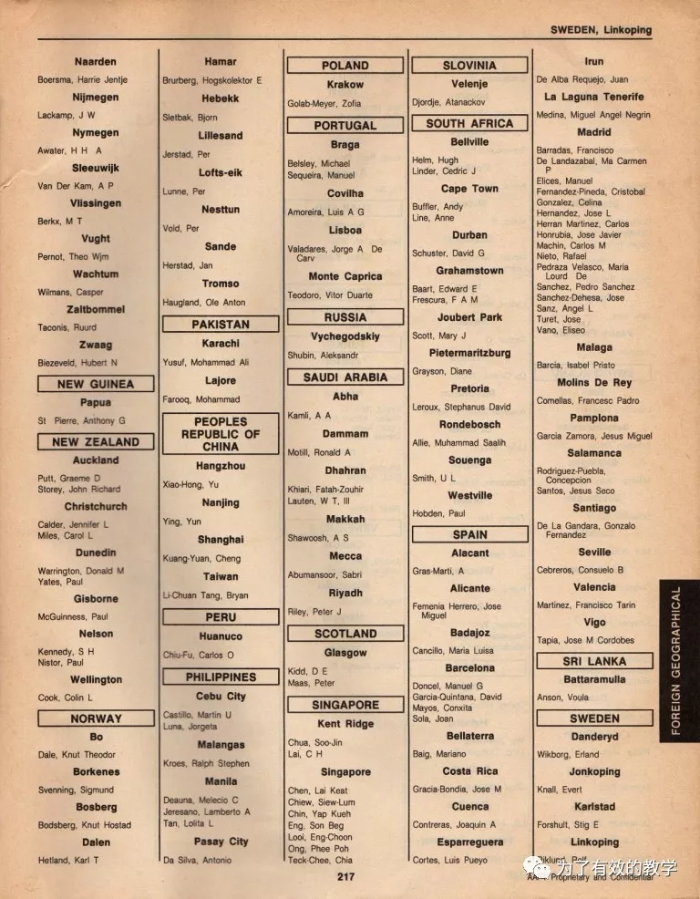 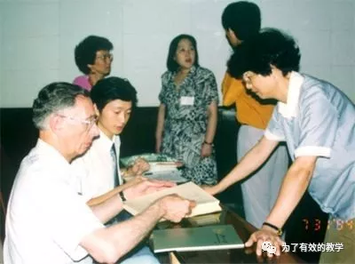 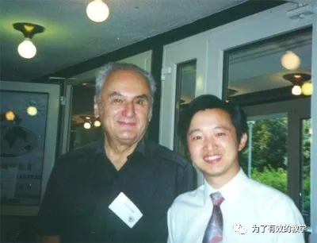 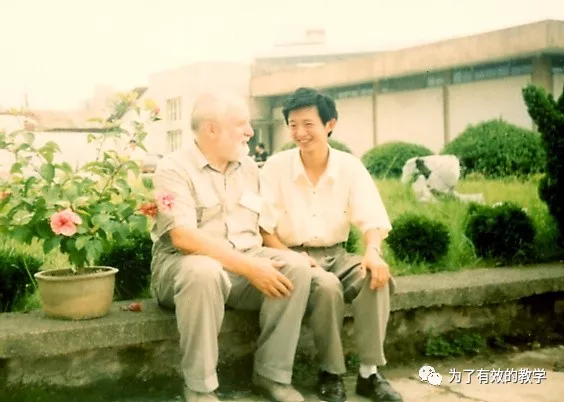 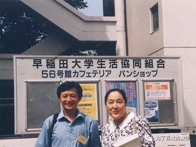 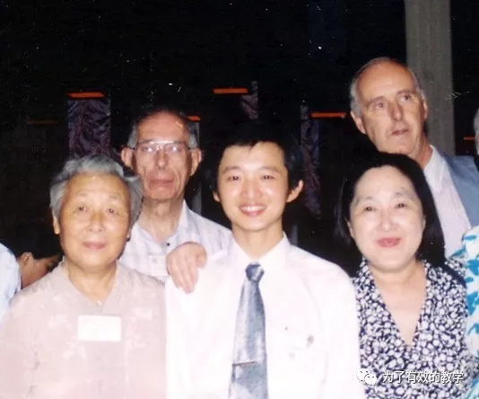 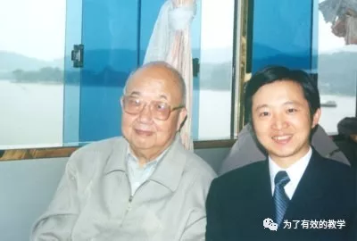 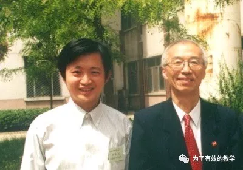 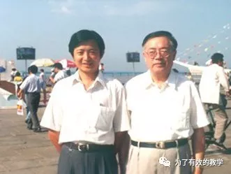 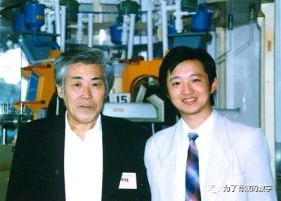 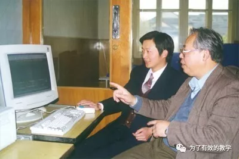
二、1994年，俞晓鸿在筹备国际会议期间敏锐地发现美国和加拿大正在使用Internet(即因特网\互联网)连接学校，打造教育的信息高速公路。1995年，俞晓鸿因此参与马云创建的我国第1个商业网站-中国黄页(即阿里巴巴的前身)的建设并担任第1任总策划，具体负责企划、科普宣传、巡回演讲、地推、代理商培训、网页编排、广告摄影、内刊主编、对外咨询等，并于当年与马云夫人张瑛一起拿到了我国第1单不靠关系仅凭骑着自行车地推获得的互联网信息发布收入(2张网页共2万元)，由此引领了我国第1波互联网应用的浪潮。
照片：
20 中国第1个商业网站-中国黄页的首页(当时的浏览器为Netscape),1995
21 俞晓鸿担任中国黄页第1任总策划,1995
22 俞晓鸿与马云张瑛在杭州金地大厦3308号,1995
23 中国第1单仅凭地推获得的互联网信息发布收入来自杭州雅士达服装厂,1995
24 俞晓鸿与马云何一兵何向阳等深夜在金地大厦大堂一角开会讨论工作,1995
25 俞晓鸿率中国黄页地推团队巡回演讲并在当年就实现了收支平衡,1996
26 俞晓鸿在做“Internet走进中国”大型演讲时座无虚席,1997
27 中国黄页全体职员合影,1997
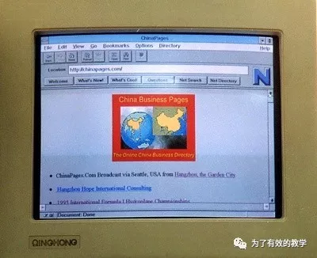 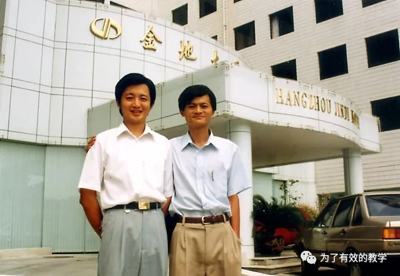 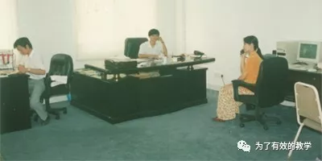 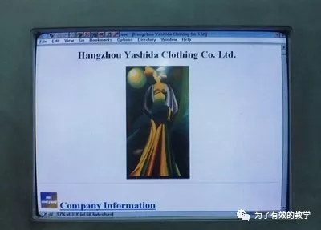 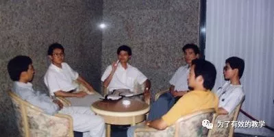 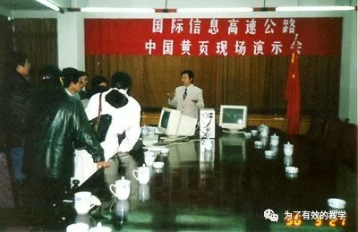 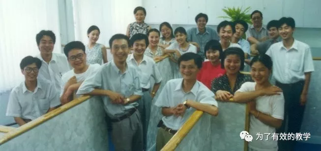
三、1997年，俞晓鸿创建了我国第1个学科教育网站-中国物理教育网。该新闻在中央电视台第1、2、4频道播出4次，在中国教育电视台以专题片形式先后播出6次，由此引领了我国互联网在学科教育领域广泛应用的浪潮。1998年，俞晓鸿作为推动互联网兴起和在教育上应用的特殊人才被浙江大学引进，专门从事互联网教学、研究及管理，其面向浙江大学多个院系的选修课程“Internet及应用”于次年获得浙江大学优秀教学成果教学课件一等奖。
照片：
28 俞晓鸿创建的中国物理教育网的首页(含有搜索引擎和电子货币系统),1997
29 俞晓鸿受中国物理学会教学委员会委托担任中国物理教育网研究管理组组长,1997
30 俞晓鸿担任中国物理教育网网络中心副主任(主持工作),1998
31 中央电视台第1频道播出了中国物理教育网的新闻,1998
32 俞晓鸿在浙江大学从事互联网教学和研究并获浙江大学教学成果教学课件1等奖,1999
33 中国物理教育网网络中心从浙江大学迁至《物理通报》杂志社后与社长吴祖仁教授合影,1999
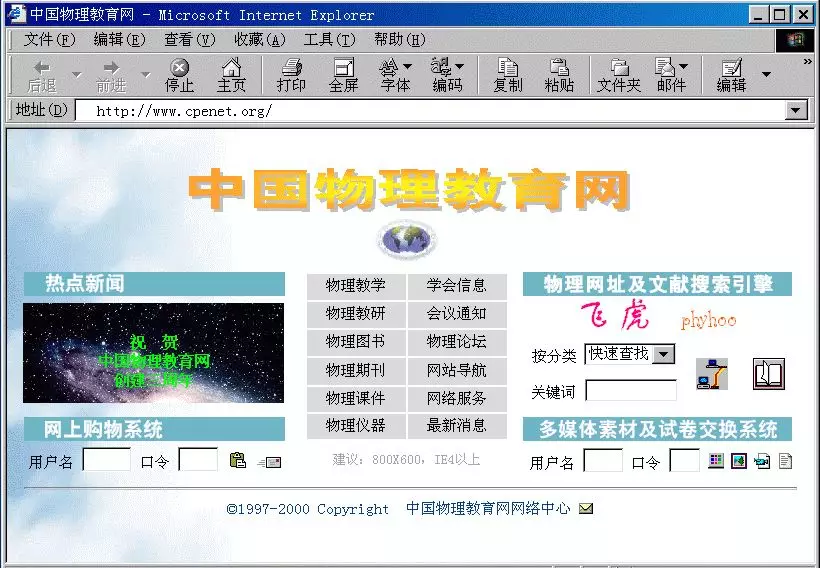 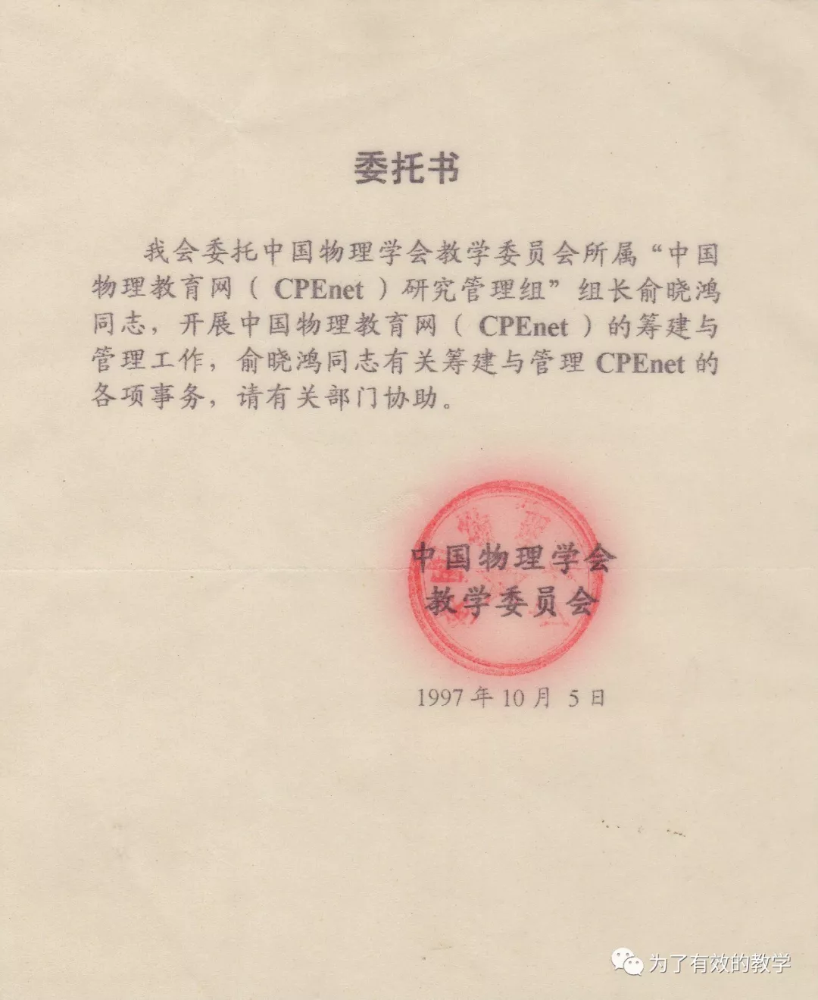 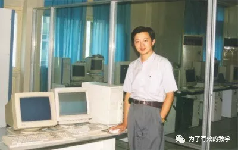 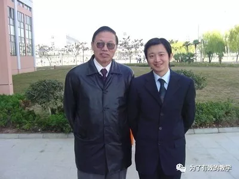
四、1999年8月，俞晓鸿发起并组织了全国第1届物理课件大赛，这是我国第1次全国规模专业学科的课件大赛，由此引领了我国信息技术与学科教学深度融合的浪潮。此后，俞晓鸿还参与组织了后续历届全国物理课件大赛，提出并自始至终坚持正确的评价导向。1999年11月，中国物理学会第7届理事会教学委员会全体(扩大)会议对俞晓鸿多年来为中国物理教育事业做出的贡献，以全体起立集体鼓掌的方式表示敬意。
照片：
34 俞晓鸿在全国第1届物理课件大赛上担任评委正在评审复旦大学钟万衡教授的课件,1999
35 俞晓鸿在全国第1届物理课件大赛闭幕式上代表组委会和评委会讲话,1999
36 中国物理学会第7届理事会教学委员会全体(扩大)会议代表合影,1999
37 俞晓鸿担任中国物理学会全国物理课件与素材中心主任,2000
38 全国第1届物理课件大赛代表合影,1999
39 全国第2届物理课件大赛代表合影,2000
30 全国第3届物理课件大赛代表合影,2001
41 全国第4届物理课件大赛代表合影,2002
42 全国第5届物理课件大赛代表合影,2004
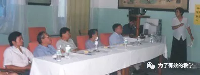 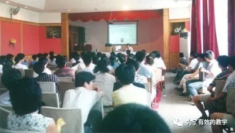 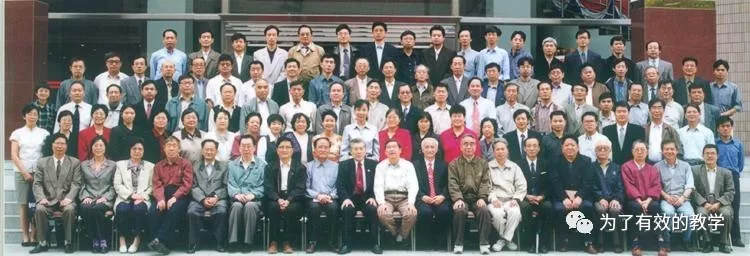 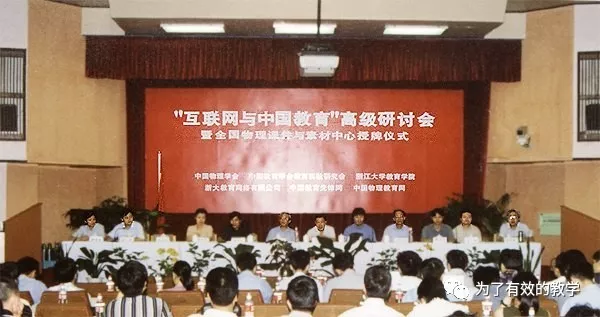 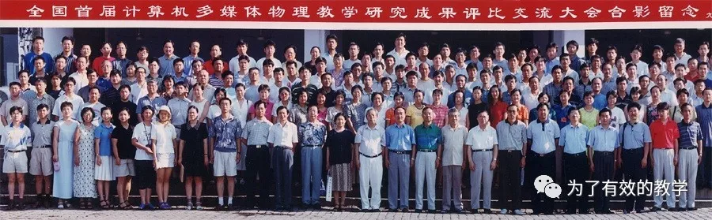 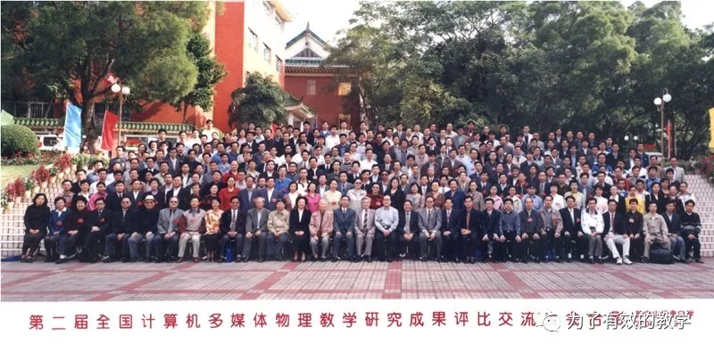 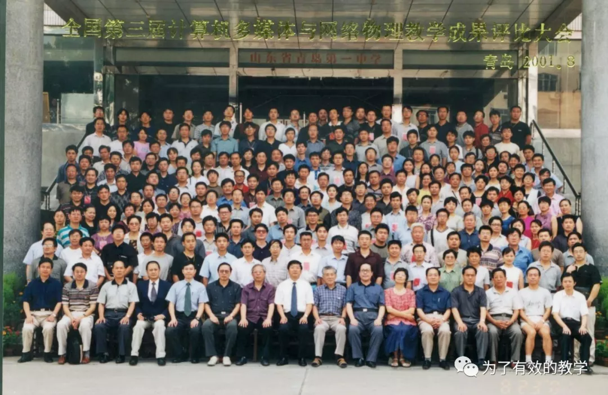 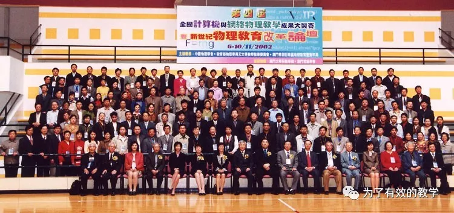 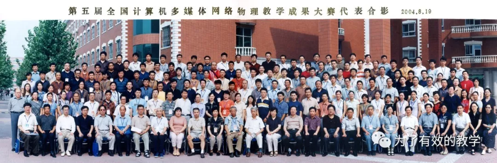
五、2000年，俞晓鸿设计并领导建设了我国第1批教育城域网。次年，《中国教育报》以整版篇幅刊登了俞晓鸿的文章“城域教育网,开启教育信息化新纪元”，由此打开了我国教育城域网千亿规模的市场。该文后来成为全国400多个城域网及其包含的数万个校园网建设的招标指导性文件以及后续应用反思总结的重要依据，由此引领了我国教育信息化有史以来最大一次浪潮。
照片：
43 俞晓鸿设计并领导建设了我国第1个教育城域网,2000
44《中国教育报》以整版篇幅刊登俞晓鸿关于城域网建设和应用的论述,2001
45 俞晓鸿在教育部等单位组织的全国论坛开幕式上做城域网建设和应用的主旨报告,2001
46 俞晓鸿与教育部副部长周远清同志交流,2001
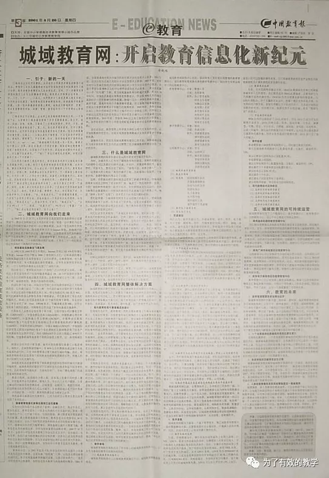 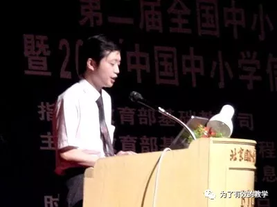 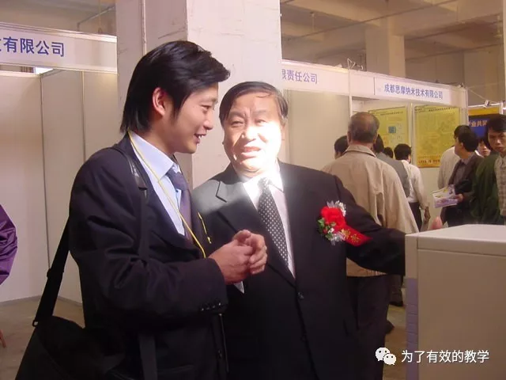
六、2004年，俞晓鸿创建了经国家人事部确认的我国教育技术学第1个博士后科研工作站-华东师范大学苏州工业园区教育技术学博士后科研工作站，由此引领了我国教育技术学产-学-研紧密结合积极发展的浪潮。
照片：
47 俞晓鸿担任我国教育技术学第1个博士后工作站领导小组副组长(主持工作),2004
48 华东师大副校长(现任上海市副市长)陈群教授参加博后站揭牌仪式,2004
49 中央电教馆副馆长丁新同志参加博后站揭牌仪式,2004
50 俞晓鸿组织研究小组对不同环境下课堂教学的有效性进行跟踪对比研究,2005
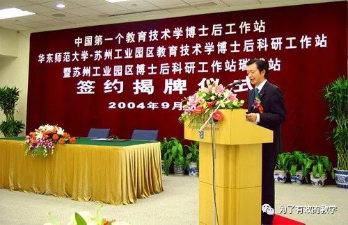 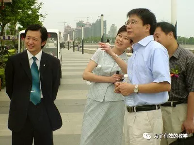 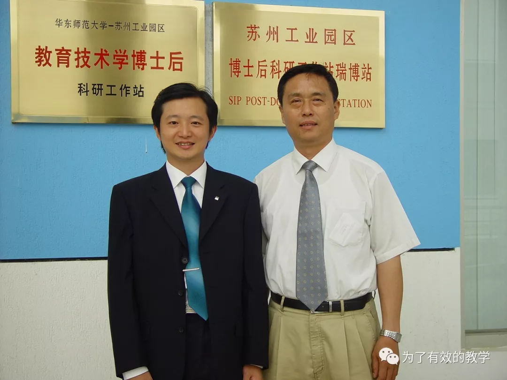 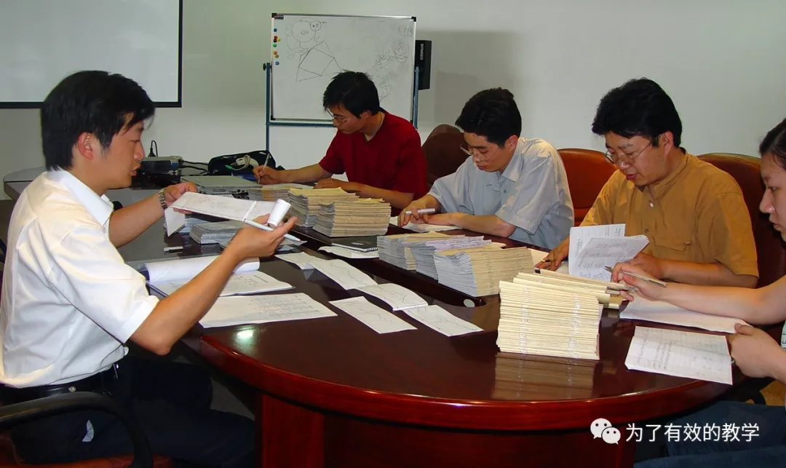
七、2006年，俞晓鸿设计并领导建设了我国第1个网上少年宫，引领了我国基于互联网的校外教育新变化。
照片：
51 俞晓鸿设计并领导建设了我国第1个网上少年宫,2006
52 我国第1个网上少年宫通过验收,2007
53 俞晓鸿主持全国网上教学论坛,2006
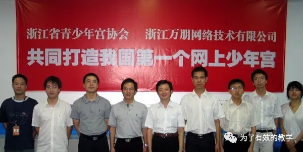 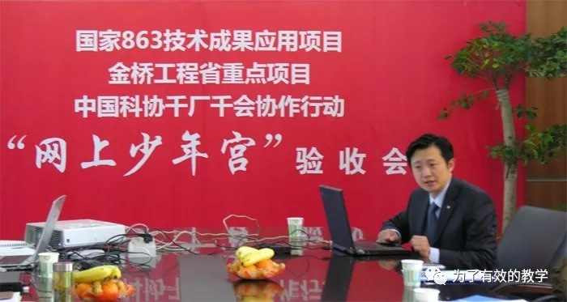 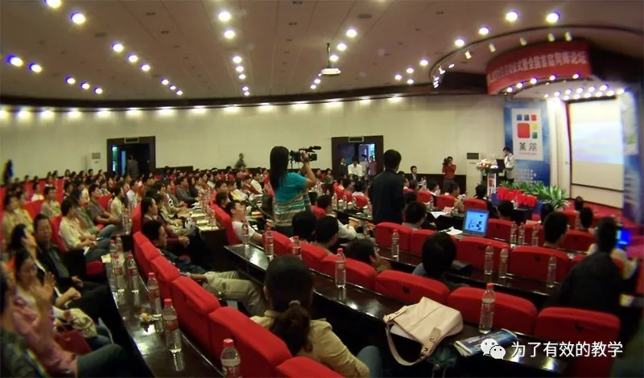
八、2011年，俞晓鸿作为浙江省城乡结对同步课堂教学的专家对该项工作进行了专业指导。2015年，俞晓鸿在四川省推出基于前概念精准备课的同步课堂教学成功范例。2019年，俞晓鸿对浙江省政府民生实事项目“千校结对”工程进行了现场指导，并通过公开课揭示了只有捕捉两端学生的前概念，才有可能摆脱电大模式和作秀表演，实现精准备课有效教学，并使每一个学生都能获得增量。
照片：
54 俞晓鸿参加浙江省网络结对工作会议并在会上做专家报告,2010
55 俞晓鸿指导四川省网络结对同步课堂教学公开课(数学),2015
56 俞晓鸿指导浙江省千校结对教师捕捉前概念实现精准备课精准教学(语文),2019
57 俞晓鸿指导浙江省千校结对教师捕捉前概念实现精准备课精准教学(科学),2019
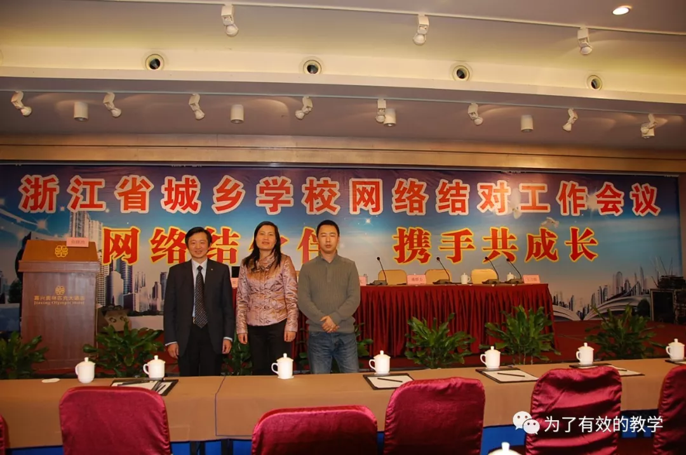
九、2013年，俞晓鸿主持的“基础教育质量测评与提高系统研究及数字学习管理关键支撑技术应用示范”列入国家科技支撑计划(2013BAH18F03)。2016年该项研究的成果《什么才是真正有效的教学——前概念原理\方法\案例\行动》由浙江大学出版社出版。俞晓鸿在该专著中提出了前概念原理、教学配方、碎片化服务生态等重要的思想、方法、技术、应用案例，为全国中小学教师精准备课有效教学提供了理论基础和成功范例，由此引领了我国教育信息化从基础建设向本质应用的转变。
照片：
58 这一学术成果饱含了俞晓鸿10余年坚持不懈的研究汗水,1996
59 这部专著属国家科技支撑计划(2013BAH18F03)研究成果,1996
60 中央电教馆馆长王珠珠同志和浙江省特级教师协会第1任会长徐承楠老师为该书作序,1996
十、近20年来，俞晓鸿以虔行的脚步，奔走在全国各地的城市学校、城乡结合部学校、农村偏远山区和矿区学校、革命老区学校、少数民族聚集区学校、留守儿童聚集区学校，除了进行学术报告，还手把手地指导从小学到中学，从数学语文科学到美术，从刚毕业的新教师到25年教龄的老教师，扎扎实实地开展基于学生前概念的精准备课和真正有效的教学，尤其是还对部分乡村教师设计的前概念问题以及教学记录逐页进行批改、批注。这一虔诚的行动，令人肃然起敬，因为它正在我国中小学最底层推动着广大教师用一生的力气去上好每一堂课，推动着课堂教学从无效或低效走向高效，推动着教学从经验走向科学。
照片：
61 俞晓鸿指导孟宏辉老师基于学生前概念精准教学,2010
62 俞晓鸿指导肖俊老师基于学生前概念精准教学,2011
63 俞晓鸿指导刚毕业的师范生吴明海准备省长来听课,2013
64 俞晓鸿指导李欢老师基于学生前概念精准教学,2015
65 俞晓鸿在开化县专家工作站-长虹学校指导课堂教学,2018
66 俞晓鸿在杭州采荷三小指导公开课省教研室评价部方张松主任省教育报刊总社言宏首席编辑观摩,2019
67 俞晓鸿在激情演讲,2015
68 俞晓鸿在听课,2015
69 俞晓鸿在与老师们磨课,2015
70 俞晓鸿批注老师们对前概念捕捉及教学的记录,2018
71 俞晓鸿在课后检验教学增量是否发生,2019
72 俞晓鸿虔行在路上,2015
主要经历：
国家科技支撑计划(2013BAH18F03)“基础教育质量测评与提高系统研究及数字学习管理关键支撑技术应用示范”课题组组长；
华东师范大学苏州工业园区教育技术学博士后科研工作站(我国该专业第1个博士后科研工作站)领导小组副组长(唯一,主持工作)；
教育部(广西师范大学)基础教育课程研究中心信息技术研究室主任；
浙江大学电子服务研究中心现代教育质量监测与服务研究所所长、研究员；
浙江省教育厅基础教育课程改革指导委员会评价组成员；
广西壮族自治区教育厅教育信息化办公室专家组副组长(唯一)；
中国物理学会第7届、第8届教学委员会委员，全国物理课件与素材中心主任；
中国物理教育网(我国第1个学科教育网站)网络中心副主任(主持工作)。
中国黄页(我国第1个商业网站,即阿里巴巴的前身)第1任总策划；
科利华集团助理总裁(我国第1个教育类主板上市公司)核心业务-教育信息化事业部总经理；
清华同方教育技术研究院学术委员会负责人；
香港新华科技集团副总裁兼教育行业首席专家；
浙江万朋教育科技有限公司副总裁兼产品与策略委员会主任等。
照片：
73 俞晓鸿担任科利华集团助理总裁兼教育信息化事业部总经理,2000
74 俞晓鸿在清华同方教育技术研究院指导各学科研究所设计教育产品,2002
75 俞晓鸿在教育部基础教育课程研究中心给研究生上课,2004
76 俞晓鸿深入广西农村偏远山区条件极为艰苦的教学点调研,2004
77 俞晓鸿任浙江大学现代教育质量监测与服务研究所所长,2009
综合评议：
俞晓鸿先生具有较为深厚的教育情怀、较为宽广的学术视野、较为扎实的研究功底，具有教育理论-教育实践-教育产品设计-教育上市公司运作四方面复合的较为丰富的履历和经验，是我国教育IT行业极有影响力的知名专家和领军人物。
照片：
79 俞晓鸿短片 虔行的脚步
80 俞晓鸿板书 用一生的力气去上好每一堂课
【2】虔行的脚步 腾讯视频[官]
联系：
手机\微信：18806521683
Q Q\邮箱：78419000@qq.com